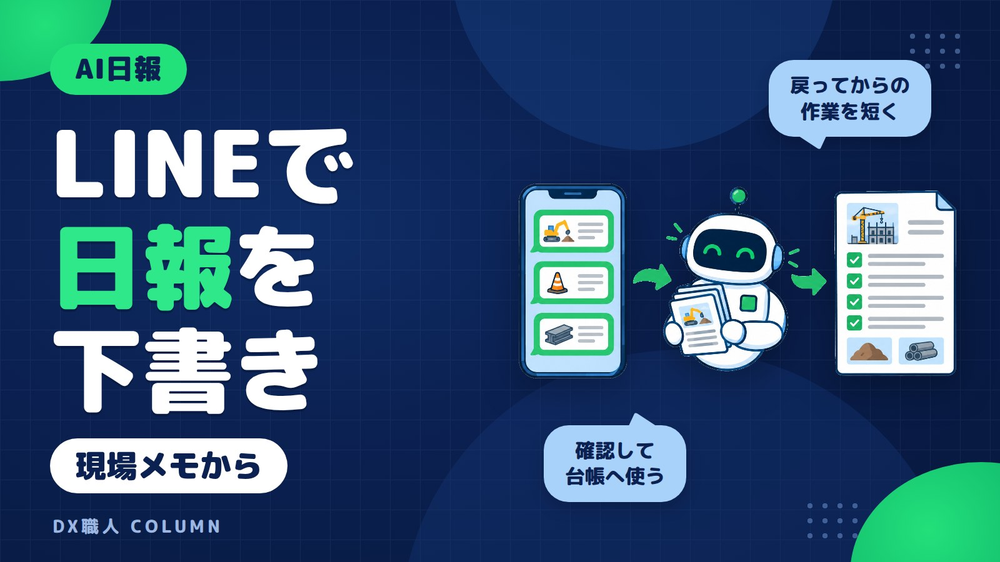

LINE日報AIで現場メモから建設日報の下書きを作る手順
夕方に現場から戻ってから日報を書くと、記憶をたどるだけで時間がかかります。LINEに短いメモや写真を送れば、AIが日報の下書きを作れます。この記事では、小さな建設会社でも始めやすい順番で、送る内容の型、確認点、台帳や報告への使い方を説明します。

この記事の要点
- LINEでメモを送るだけで下書き化
- 型を決めると日報の形が揃う
- AI下書きは人が必ず確認する
- 紙や台帳にも段階的に使える
- 補助金は導入前に最新確認
LINE日報AIは「現場で送る」から始める
建設現場の日報で時間がかかるのは、文章を書く前です。朝からの作業、来た業者、天候の影響、検査結果を思い出す必要があります。
LINE日報AIの考え方は、その場で残したメモを使うことです。現場で短く送る。AIシステムが日報の項目に分ける。人が確認して使う。この順番です。
新しいアプリを開く必要はありません。いつものLINEのトークに、作業の区切りで一言ずつ送ります。移動中や休憩中に送れるので、事務所に戻ってから思い出す時間を減らせます。
LINEを使った業務改善の全体像は、LINE業務改善を建設業で始める方法と見積日報写真の整理でも紹介しています。日報は、毎日使う分だけ効果を感じやすい仕事です。
日報にしやすい現場メモの型を決める
AIに渡すメモは、きれいな文章でなくて大丈夫です。大事なのは、日報に必要な材料が入っていることです。
まずは次の型で送ると安定します。
- 現場名
- 本日の作業
- 出面（その日に入った人数）
- 使用した重機や材料
- 検査や立会いの結果
- 問題、遅れ、天候の影響
- 明日の予定
たとえば、LINEには次のように送ります。
A邸 基礎工事。午前は配筋確認、午後は型枠。大工2名、監督1名。雨で30分中断。配筋検査OK。明日9時から生コン予定。
このくらいで十分です。AIは、この短いメモを日報の項目に分けて下書きにします。文章の上手さより、事実が入っていることが大切です。
写真と音声メモを一緒に送ると抜けが減る
現場では、文字を打つ時間が取れないこともあります。その場合は、写真と短い一言を組み合わせます。
写真だけを送ると、AIが状況を決めつけるおそれがあります。写真には、必ず補足を添えます。たとえば、基礎配筋の写真に「A邸、配筋検査前、是正なし」と付けます。
音声メモも使えます。移動前にスマホへ話しておき、文字に変換できる形にしておくと、あとで日報に使いやすくなります。
| 送るもの | 添える一言の例 |
|---|---|
| 施工写真 | 2階配管、午後完了 |
| 検査写真 | 配筋検査、指摘なし |
| 搬入写真 | 断熱材搬入、数量確認済み |
| 音声メモ | 雨で午前10時から30分中断 |
写真は証拠になります。一言メモは、写真の意味を残します。この2つをセットにすると、日報の下書きが現場の実態に近づきます。
AIが建設日報の下書きを作る流れ
LINEで送ったメモは、AIシステムが会社の日報項目に合わせて整理します。流れはシンプルです。
- 現場担当者がLINEにメモや写真を送る
- AIシステムが内容を読み取る
- 現場名、作業内容、特記事項などに振り分ける
- 日報の下書きをLINEに返す
- 担当者が確認して、台帳や報告に使う
たとえば、次のように変わります。
| LINEに送るメモ | AIの下書き例 |
|---|---|
| A邸 基礎 配筋検査OK | A邸にて基礎配筋検査を実施し、結果は合格でした。 |
| 午後 型枠 雨30分中断 | 午後は型枠作業を行いました。降雨のため、作業を約30分中断しました。 |
| 明日 生コン9時 | 明日は午前9時より生コン打設を予定しています。 |
AIが得意なのは、短いメモを報告書らしい文章に整えることです。ゼロから考える時間を、確認する時間に変えるのが目的です。
AI下書きは人が確認してから提出する
AIが作った日報は、そのまま提出するものではありません。最後は、現場を知っている人が確認します。
見るポイントは3つです。
- 事実が正しいか：検査結果、人数、時間、天候の表現を確認します。
- 抜けがないか：メモに入れ忘れた作業や注意点を足します。
- 言い回しが合うか：会社の日報で使う表現に直します。
AIは、メモにない内容を自然な文章で補ってしまうことがあります。たとえば「検査OK」から「指摘事項なし」と書く場合があります。本当に指摘がなかったかは、人が見ます。
お客様の氏名、住所、図面、契約に関わる情報の扱いも注意が必要です。AIに渡す情報の考え方は、AIに入力してよい情報、避けたほうがよい情報で詳しくまとめています。
紙の日報や既存台帳にも段階的に使える
今も紙の日報を使っている会社は多いです。いきなり紙をやめる必要はありません。最初は、下書きを作る部分だけAIに任せます。
現場でLINEにメモを送ります。返ってきた下書きを見ながら、いつもの紙の日報に書き写します。これだけでも「何を書けばよいか」で止まる時間を減らせます。
次に、会社の様式に合わせて下書きを作ります。作業内容、出面、安全確認、明日の予定など、紙の日報と同じ順番にすると転記が楽です。
さらに進める場合は、台帳や報告用の一覧に使える形で保存します。現場名、日付、担当者、特記事項を分けておくと、あとで検索しやすくなります。
大切なのは、現場の流れを急に変えないことです。まず下書きだけ。次に様式合わせ。最後に保存方法の見直し。この順番なら、負担を増やさず進めやすくなります。
チームで使う前に決める小さなルール
複数人で使う場合は、入力のばらつきを減らすことが大切です。難しいルールは不要です。最低限だけ決めます。
| 決めること | 例 |
|---|---|
| 現場名の書き方 | A邸、Bマンション改修などに統一 |
| 必ず入れる項目 | 作業内容、人数、問題点、明日の予定 |
| 写真の送り方 | 写真の直後に一言メモを付ける |
| 確認する人 | 送った本人、または現場責任者 |
| 締め時間 | その日の退勤前までに確認 |
特に、問題があった日ほどメモが重要です。遅れ、手戻り、追加作業、近隣対応などは、短くても残します。
また、下書きを作る人と提出する人を分ける場合は、確認の流れを決めておきます。AIは手伝う役目です。責任ある記録として残す前に、人が見て整えます。
DX職人ならLINEから使うAIシステムにできる
DX職人は、建設業や不動産業向けに、LINEで使えるAIシステムを提供しています。新しい画面を覚える前に、いつものトークから始められる形を重視しています。
日報の場合は、今使っている日報の項目をもとに設計します。現場名、本日の作業、出面、重機、材料、検査、特記事項、明日の予定などを、自社の言葉に合わせます。
たとえば、現場担当者がLINEで「A邸、外壁下地、職人3名、午後に材料不足」と送ります。AIシステムは、会社の様式に合わせて日報の下書きを返します。担当者は内容を直して提出します。
日報だけでなく、見積、請求、物件対応、写真整理にも広げられます。毎日発生する打ち直しや書き直しを、LINEから少しずつ減らす考え方です。
最初から大きく変える必要はありません。まずは1つの現場、1つの日報様式から始めると、使えるかどうかを判断しやすくなります。
補助金・助成金はAIシステム導入前に確認する
LINEで使うAI日報システムは、導入費用がかかります。内容によっては、IT導入補助金などの補助金を使える場合があります。
ただし、補助金や助成金は年度や公募回で内容が変わります。対象経費、申請の流れ、締切、必要書類は、最新の公募要領で確認します。採択や支給が必ず決まるものではありません。
導入前に確認したい点は、次の3つです。
- 導入したいAIシステムが対象になり得るか
- 見積や契約の前に必要な手続きがないか
- 会社の業種、規模、使い方が制度に合うか
制度ごとに要件があるので、ご相談の際に確認します。補助金を考える場合は、システムを決めてから慌てるより、最初の相談時点で確認するほうが安全です。
建設業でLINEのAIシステム導入を考える流れは、IT導入補助金で建設業がLINEのAIシステムを導入する流れでも詳しく説明しています。日報AIも、費用と制度の確認を同時に進めるのがおすすめです。
よくある質問
LINEで送った現場メモだけで日報は作れますか？
短いメモだけでも下書きは作れます。ただし、現場名、作業内容、人数、問題点、明日の予定などの材料が必要です。AIの文章は提出前に人が確認します。
写真だけを送ればAIが建設日報を書いてくれますか？
写真だけでは状況を正しく判断できない場合があります。施工写真には「どの現場の何の作業か」を一言添えると、日報の下書きが現場に合いやすくなります。
AIが作った日報はそのまま提出できますか？
そのまま提出せず、担当者が確認してください。検査結果、人数、天候、時間、指摘事項などは事実と違う表現がないかを見る必要があります。
LINEのAI日報システムは補助金の対象になりますか？
IT導入補助金などの対象になる場合があります。ただし制度内容は年度や公募回で変わります。最新の公募要領と会社の状況を確認して判断します。